Spring is here and Easter is the perfect excuse to pull out the construction paper and make something sweet together. These easter paper crafts use simple supplies you already have at home, and most of them are ready in under 30 minutes. Whether your kids are toddlers or early elementary age, there is something on this list that will make them smile. 🌸
From classic paper bunnies to spring flower garlands and Easter egg chains, each project is designed to be beginner-friendly, low-stress, and genuinely fun to do together. No special skills needed.
What You'll Need
These supplies cover most of the 20 easter paper crafts on this list, so one quick trip to your supply drawer and you are ready to go.
- Crayola Construction Paper (480 sheets, assorted colors), the main material for nearly every project on this list.
- Fiskars Training Scissors for Kids, safe rounded tips for little hands.
- Elmer's All Purpose School Glue Sticks, washable and mess-friendly.
- DECORA Self-Adhesive Googly Eyes (800 pcs, assorted sizes), perfect for bunnies, chicks, and more.
- Crayola Broad Line Washable Markers, for adding details and decorating finished pieces.
- Tape or a hole punch and string, for garlands, mobiles, and hanging projects.
20 Easter Paper Craft Ideas for Kids
1. Paper Easter Egg
Draw a large egg shape on cardstock and cut it out, then let your child go wild decorating it with stripes, polka dots, zigzag lines, and colors. You can punch a hole at the top and thread a ribbon through to hang it in a window. Easter paper crafts don't get much simpler than this, and even toddlers can fill the whole egg with bright marker scribbles that look surprisingly beautiful.
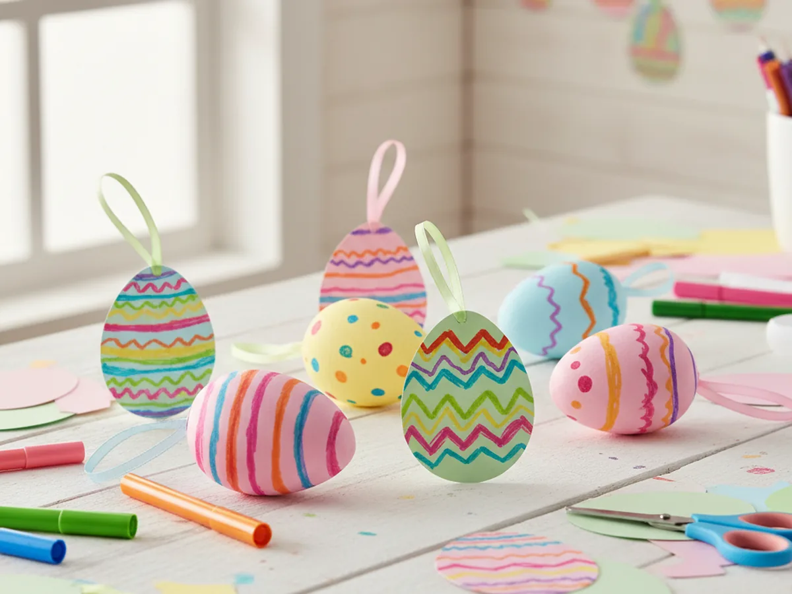
2. Paper Bunny
Stack a large white circle for the body, a smaller circle for the head, and two tall oval ears cut from white paper. Glue them together, add a tiny pink paper nose, googly eyes, and draw on a small smile. This classic paper bunny craft is endlessly adorable and kids love making a whole family of bunnies in different sizes. 🐰
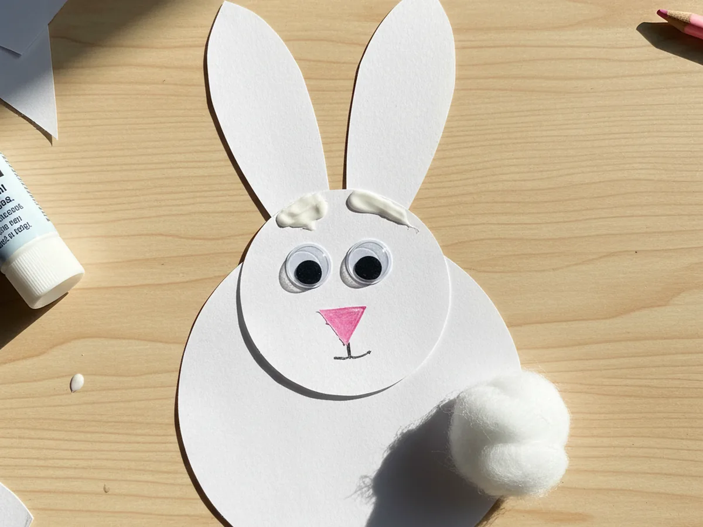
3. Paper Chick
Cut a large yellow circle for the body and a smaller one for the head, then add two small orange triangle feet and a tiny orange diamond beak folded in half. Stick on two googly eyes and your chick is complete. This is one of the most popular easter paper crafts for kids because it comes together so quickly and the results are genuinely cute. 🐣
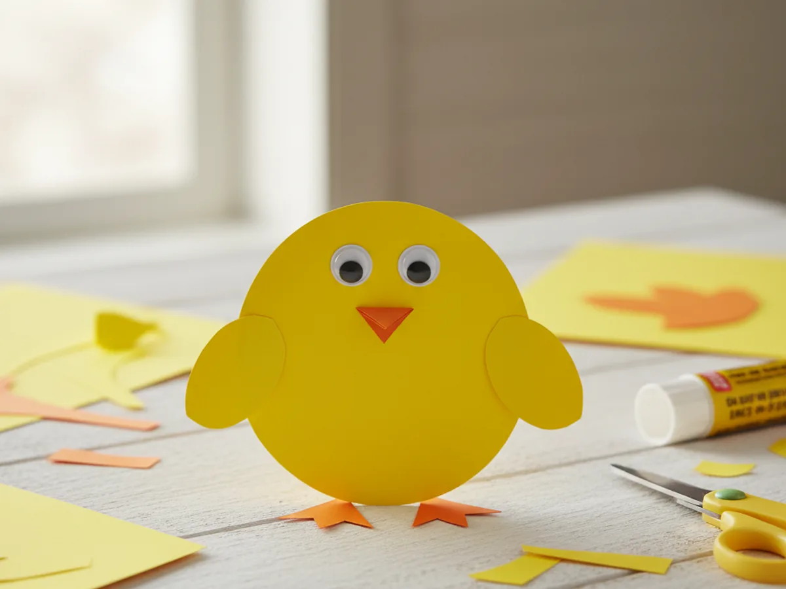
4. Paper Easter Basket
Fold a sheet of construction paper into a simple box shape, secure the sides with glue or tape, and add a strip of paper as the handle. Let your child decorate the outside with stickers, marker designs, or small glued-on paper flowers. Fill it with paper eggs or tissue paper grass for a sweet Easter morning surprise.
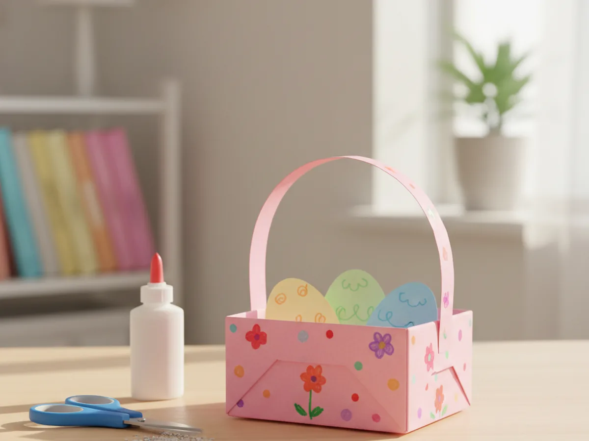
5. Paper Tulip
Cut a teardrop or rounded petal shape four times from pink, red, or yellow paper, then glue the petals together around a center to form a tulip bloom. Attach a long green strip of paper as the stem and a pointed green leaf on the side. A few of these arranged in a small paper vase make a wonderful spring decoration for the kitchen table.
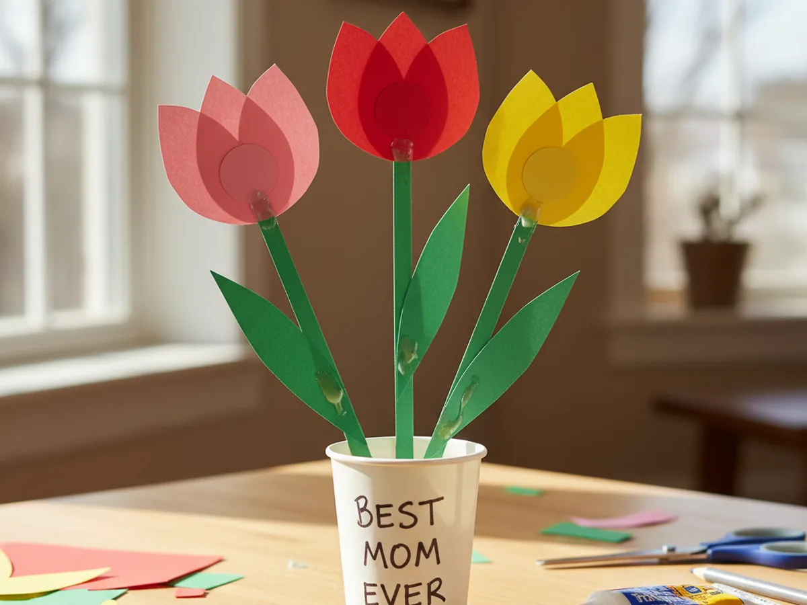
6. Paper Butterfly
Accordion-fold a rectangular sheet of paper into a fan, then pinch it in the middle and twist a pipe cleaner or narrow strip of paper tightly around the center to form the body. Fan out both sides and your butterfly is ready. This is a gorgeous spring paper craft that works beautifully with patterned or tie-dyed coffee filter paper for extra color.
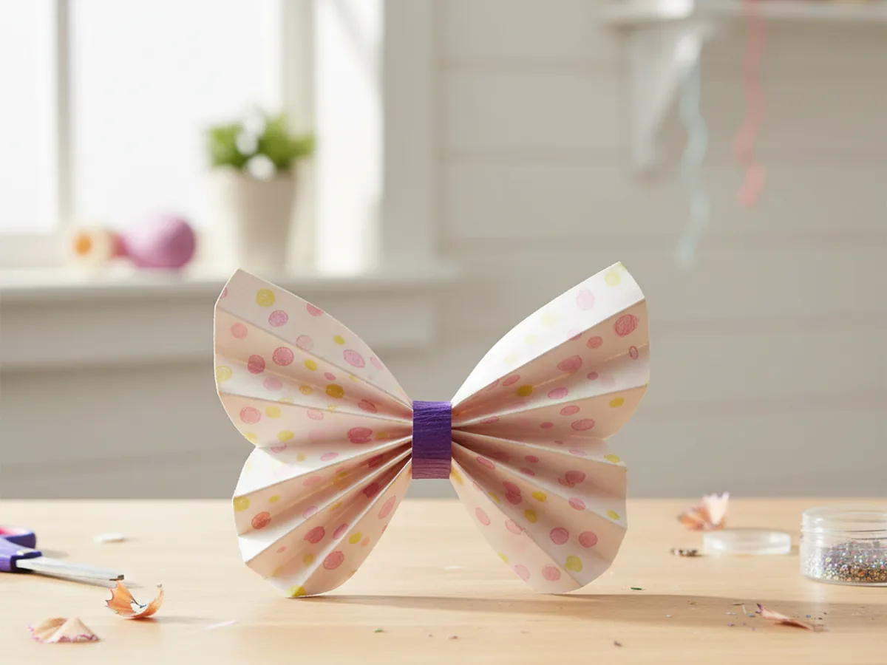
7. Paper Carrot
Roll a sheet of orange construction paper into a cone shape and secure with a glue stick. Scrunch a few thin strips of green paper and glue them into the open top of the cone as the leafy carrot top. These are quick, require very little cutting, and little ones love filling a paper Easter basket with a handful of them.
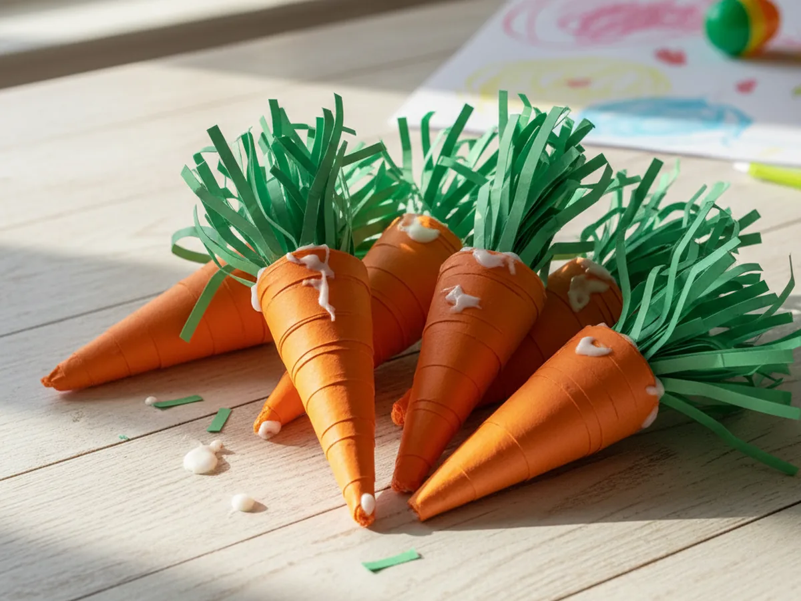
8. Origami Easter Egg
Start with a square sheet of paper and follow a simple origami egg fold to create a flat, decorative egg shape. Kids aged 6 and up can often manage basic folds independently, while younger ones enjoy watching and choosing the paper colors. Use patterned scrapbook paper for especially pretty results.
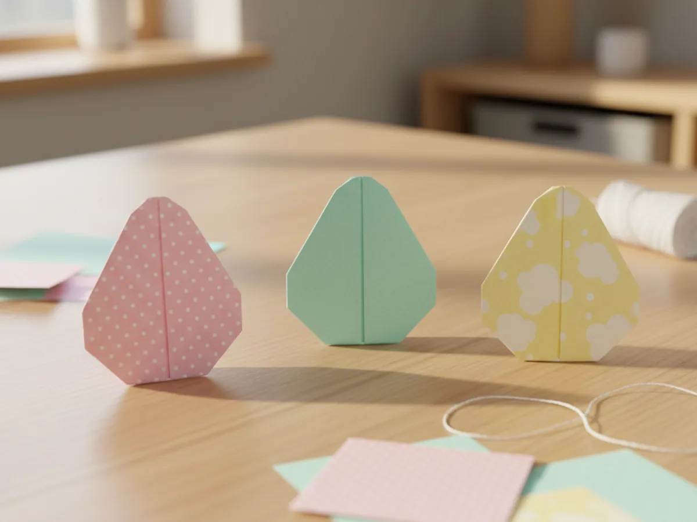
9. Paper Bunny Ears Headband
Cut a long strip of white cardstock to fit around your child's head, then cut two tall bunny ear shapes and two smaller pink inner-ear shapes to glue on top of each. Staple or glue the strip into a ring, attach the ears, and your child has a wearable Easter accessory they will love showing off. These are also a hit at classroom Easter parties.
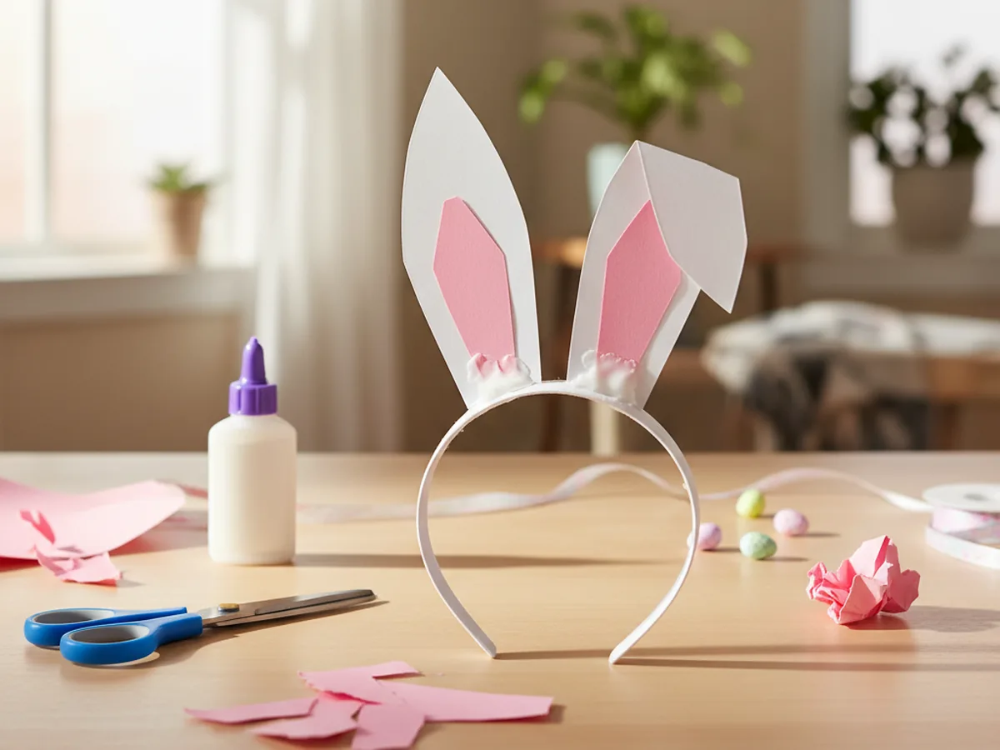
10. Paper Easter Wreath
Cut the center from a paper plate or draw and cut a large ring from cardstock. Let your child glue on torn pieces of green construction paper to create a leafy base, then add small paper flowers, paper eggs, and a ribbon bow. This easy easter paper craft doubles as a charming front door decoration that holds up for the whole season.
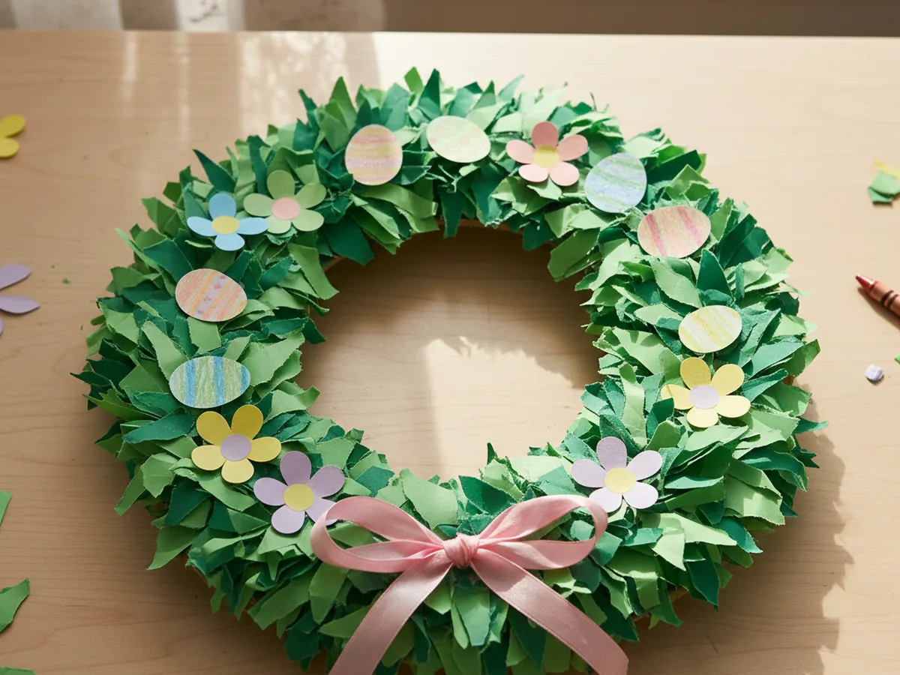
11. Paper Spring Flower Garland
Cut simple five-petal flower shapes from pink, yellow, and purple construction paper, add a small yellow circle center, and punch a hole through the middle of each one. Thread the flowers onto a long piece of twine or yarn, alternating colors, and hang across a window or along a shelf. It looks beautiful and takes very little time to put together.
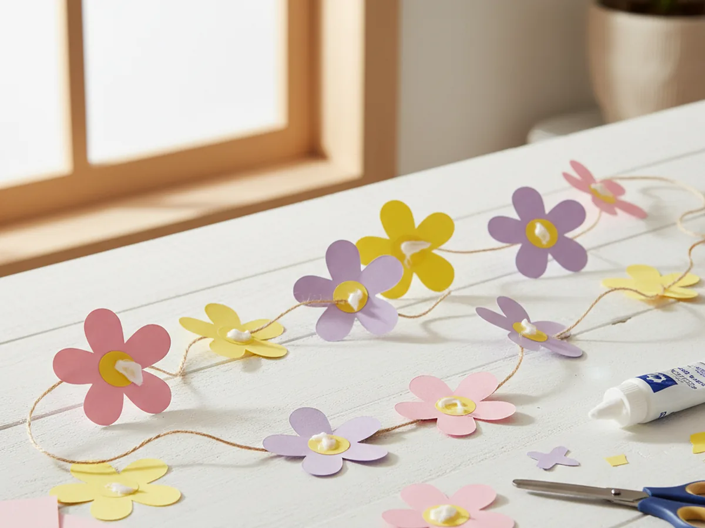
12. Paper Robin and Nest
Tear small strips of brown paper and layer them in a bowl shape to create a nest. For the robin, cut a small teardrop body from red-orange paper, add a round brown head, a tiny yellow beak, and googly eyes. Nestle the bird inside the torn-paper nest for an adorable spring scene that sits beautifully on a windowsill or mantel.
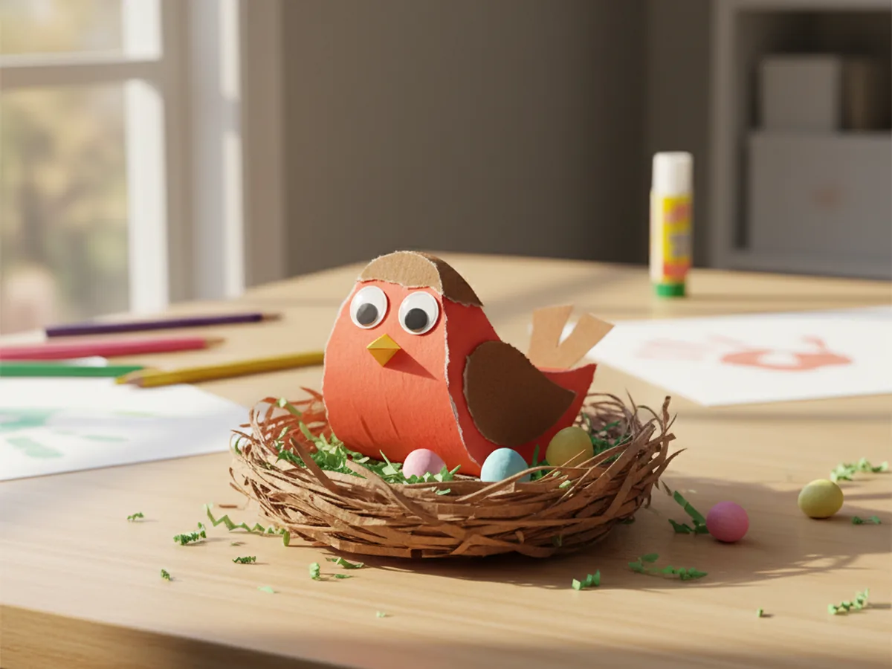
13. Paper Bunny Pop-Up Card
Fold a sheet of cardstock in half to make a card. Inside, fold a small strip into a Z-shape and glue a paper bunny face to one end so it springs up when the card opens. Easter paper crafts that double as gifts are always special, and this one gets the most delighted reactions from grandparents and teachers alike.
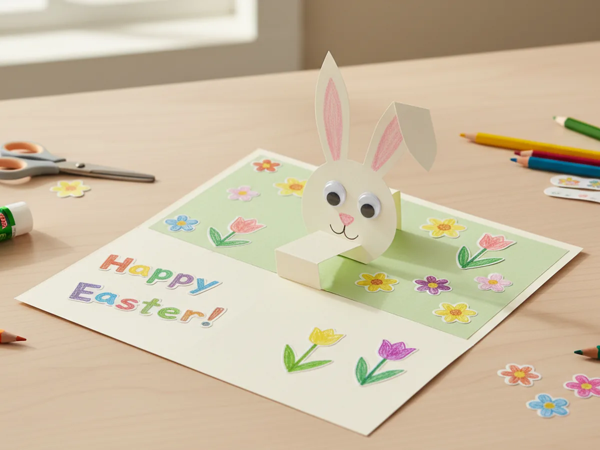
14. Paper Chick Hand Puppet
Cut a simple chick shape from yellow construction paper, leaving a flap at the bottom open. Slide two fingers in to make the puppet "talk." Decorate with an orange triangle beak, googly eyes, and small paper wings on the sides. Kids go wild for these during Easter playtime and they are one of the most requested easter paper crafts at preschool craft tables.
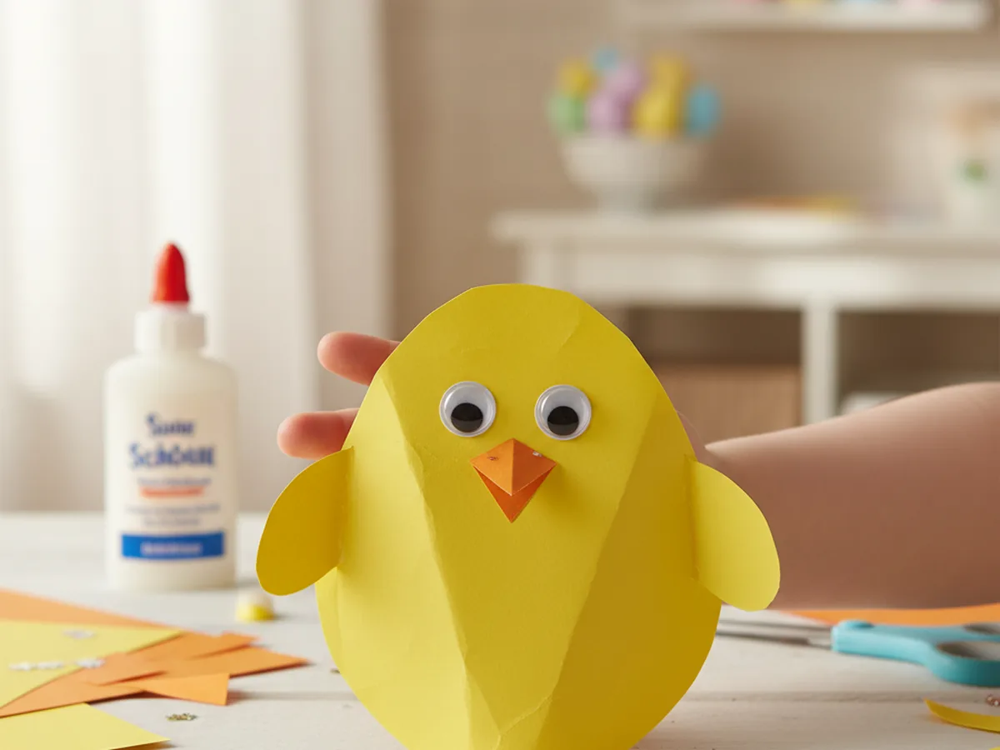
15. Paper Easter Egg Garland
Cut out 10 to 15 egg shapes from brightly colored construction paper and let your child decorate each one differently, with stripes, polka dots, or their own designs. Punch a hole at the top of each egg and thread them all onto a long piece of twine. Hung across a window or above the fireplace, this garland is a cheerful Easter decoration your family can make together every year.
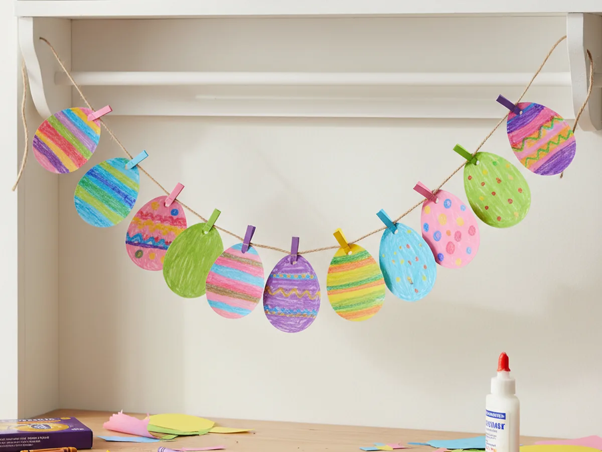
16. Paper Bunny Windsock
Roll a sheet of white cardstock into a cylinder and glue the edges. Cut long white paper strips and attach them to the bottom opening as the windsock tails. Add a bunny face to the front with two tall ears, googly eyes, and a pink nose. Hang it from a doorway or porch hook for a sweet spring decoration that sways gently in the breeze.
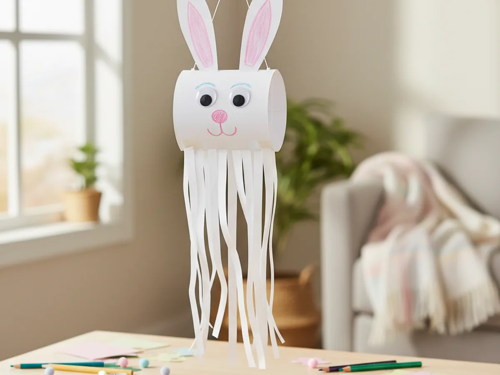
17. Paper Lamb
Cut a fluffy oval body from white cardstock and glue on a scrunched ball of cotton or torn white tissue paper pieces for texture. Add four small black rectangle legs, a rounded black head, and two small ears. This little lamb is one of the most lovable easter paper crafts for toddlers because the scrunching and tearing is so satisfying for small hands.
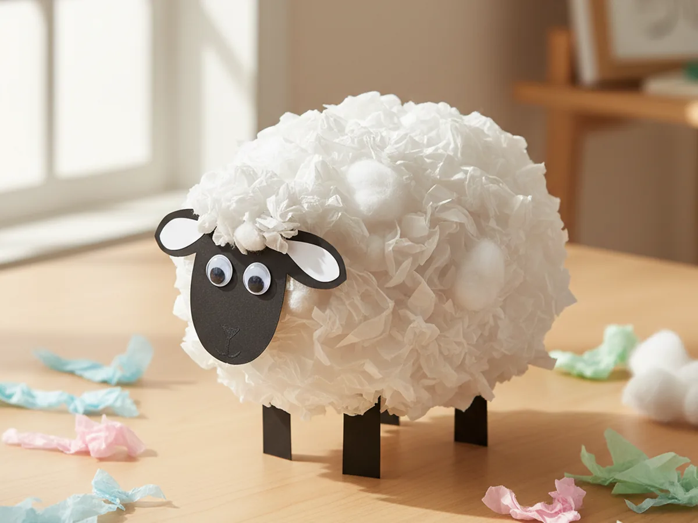
18. Paper Daffodil
Cut six narrow petals from yellow paper and glue them in a circle. Roll a small piece of orange paper into a cone for the trumpet center and glue it in the middle of the petals. Add a long green strip stem and a simple green leaf. A few of these bright paper daffodils in a paper cup vase make a gorgeous Easter centerpiece that keeps forever.
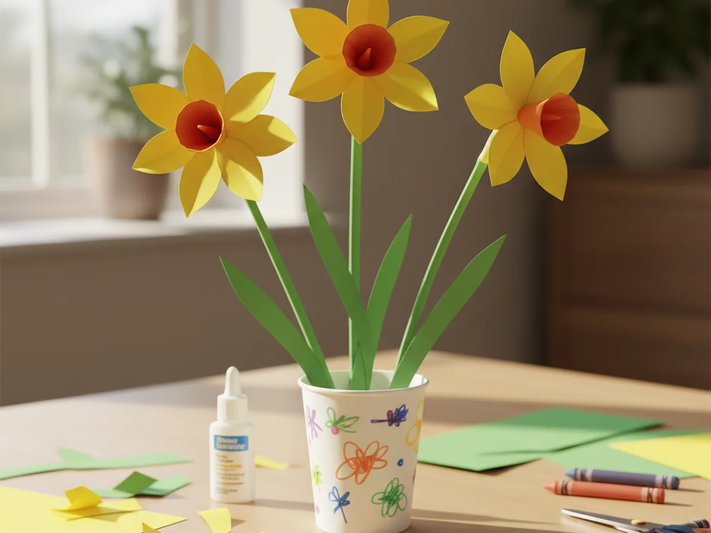
19. Paper Easter Mobile
Cut several Easter shapes from construction paper: eggs, bunnies, chicks, and flowers. Decorate each one, punch a hole at the top, and hang them at different lengths from a stick or dowel using yarn or thin string. Suspend the stick from the ceiling in your child's room for a sweet seasonal decoration that makes bedtime a little more festive.
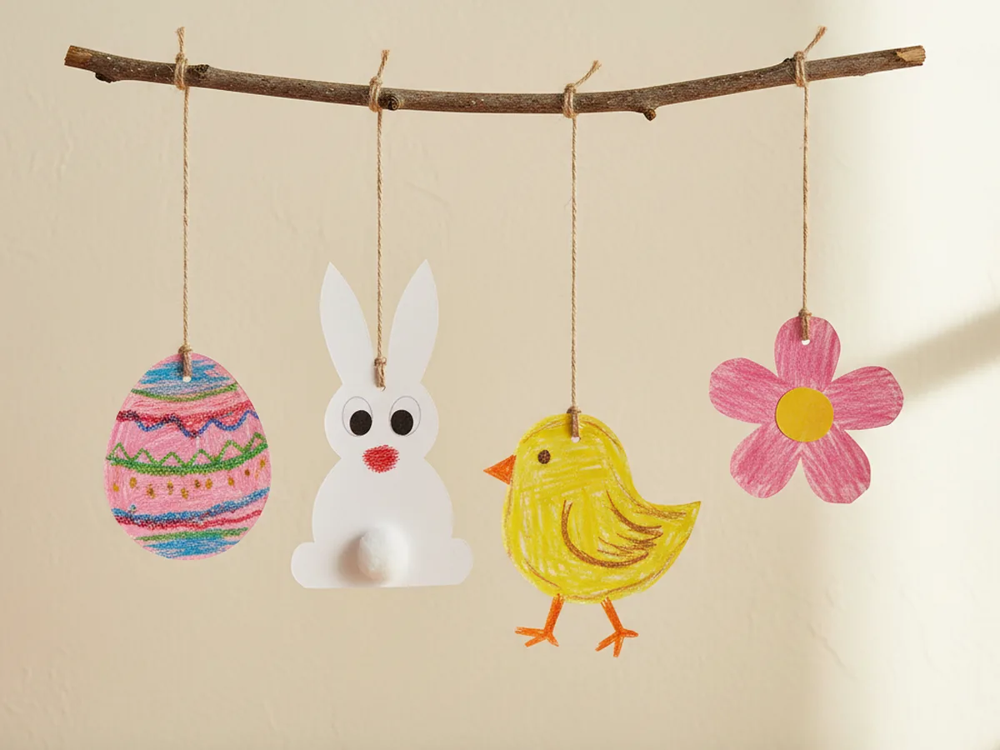
20. Paper Easter Greeting Card
Fold a sheet of cardstock in half and decorate the front with a hand-drawn or collage Easter scene, a bunny, a bunch of eggs, or a spring garden. Write a short personal message inside and give it to a grandparent, neighbor, or friend. Handmade cards are one of those easy easter paper crafts that cost nothing but feel like the most thoughtful gift in the room. 💛
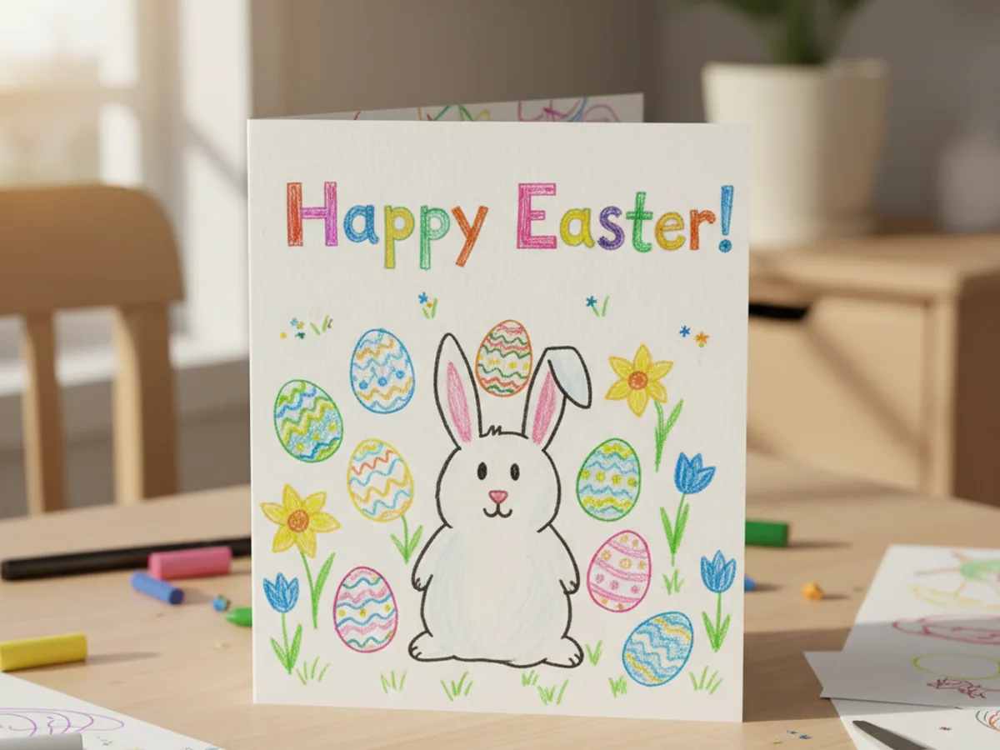
Final Thoughts
There is no right or wrong way to do any of these easter paper crafts. The imperfect bunny ears, the slightly lopsided chick, the egg that got a little too much marker color all of that is what makes handmade so special. What your child will remember is not how perfect the craft looked, but how much fun they had making it with you.
Pick one or two ideas that fit your afternoon, grab the construction paper and scissors, and enjoy the creative time together. Spring goes fast, and these little paper projects are one of the nicest ways to slow it down.
More Crafts You'll Love
If your family loves seasonal paper crafts, these two articles are full of more fun ideas for different times of year.
Whichever project you try first, have fun and enjoy every creative moment together.